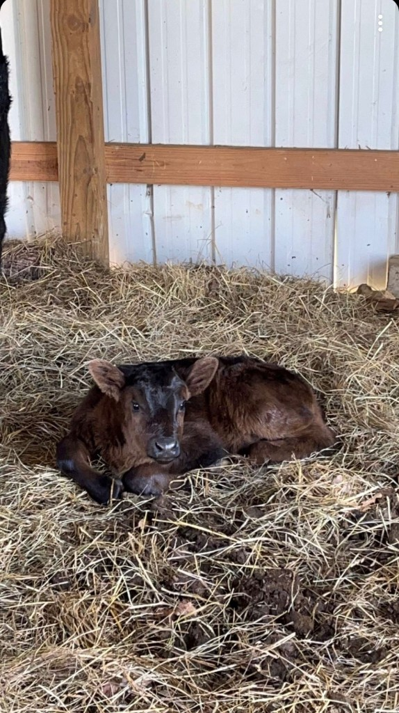
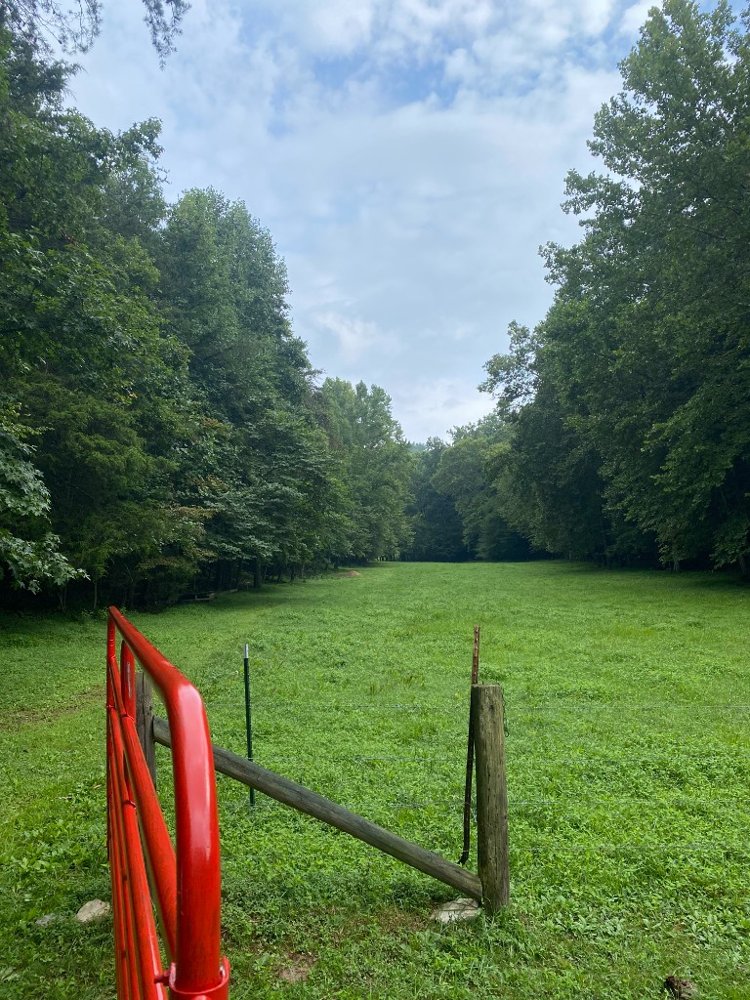
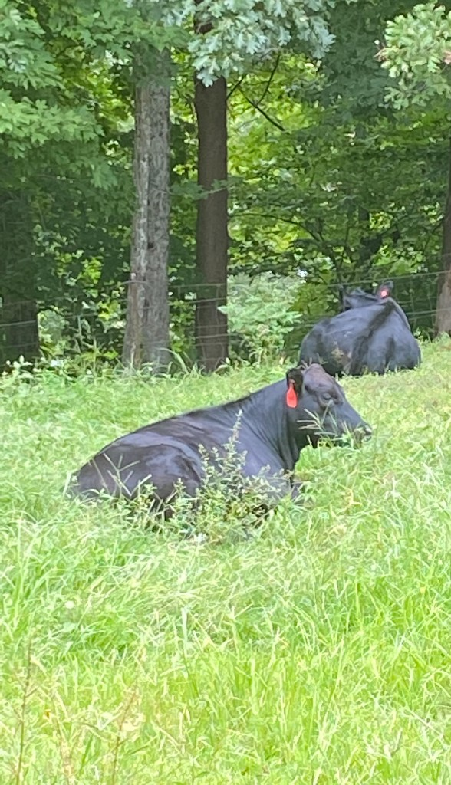

Scroll through the full set of ranch photos in one place. For a quick sideways preview, visit the On the ranch section on our home page.
Barn time: calves and cows on fresh bedding.

Calf resting on straw in the barn.

Pasture lane through the gate toward the treeline.

Cows resting in summer pasture.Winter feeding: Angus at the trough in the snow.Marbled cuts on the board, ready for the kitchen.Ground beef packed and stacked for pickup.